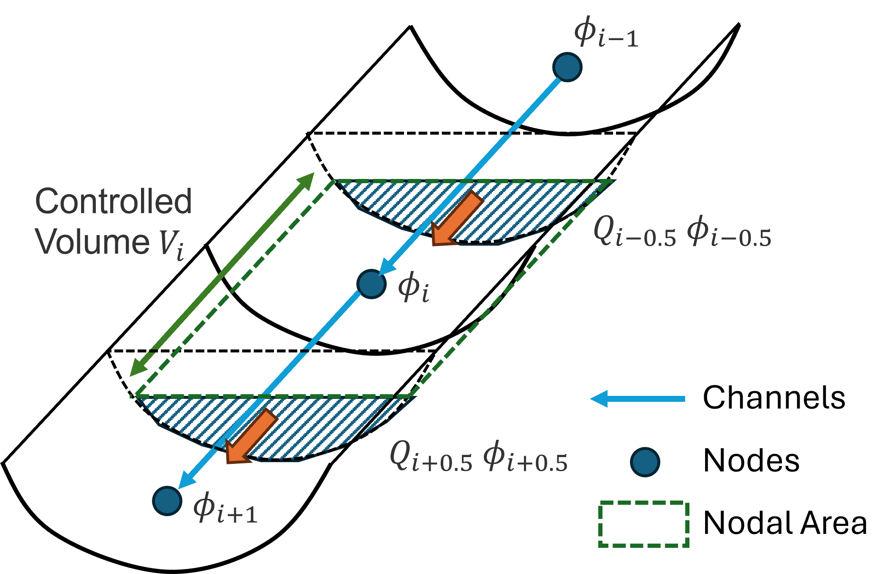
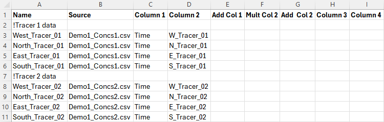
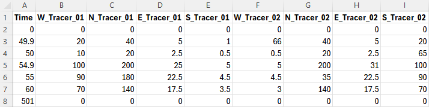

| 2D Domain GIS Layers | Suggested File Prefix | Description | Section |
|---|---|---|---|
2D AD Initial Conditions |
2d_ad_ic_ |
Layer containing polygons defining the spatial distribution of initial conditions for a given constituent. Optional. |
|
2D AD Minimum Dispersion Coefficient |
2d_ad_md_ |
Layer containing polygons defining the spatial distribution of minimum dispersion coefficients (\(D_w\)) for a given constituent. Optional. |
9 Advection Dispersion
The TUFLOW AD Module is an add-on Module and extension of the TUFLOW hydrodynamic engines. By including passive transport fields for tracers, the advection, dispersion and fate of water quality constituents may be simulated. Examples of constituents include salinity, sediment and/or catchment inflow pollutant concentrations. Both dissolved and particulate constituents can be simulated. TUFLOW AD takes depth and velocity fields computed by the TUFLOW Classic or HPC solver and uses this information, together with initial and boundary conditions, to simulate the transport of the specified constituents. In particular, the effects of both longitudinal dispersion and transverse turbulent diffusion are included. TUFLOW AD is specifically oriented towards analyses of systems including coastal waters, estuaries, rivers, floodplains and urban areas. Up to twenty individual constituents can be simulated within TUFLOW AD. For models with linked 1D-2D domains, transport through 1D elements linked by SX connections is supported, but transport through 1D elements linked by HX connections are not.
9.1 2D Domains
9.1.1 2D Depth Averaged Equation of Motion
The equation of motion of a passive tracer \(\phi\) (as a concentration), in 2D depth averaged conservative formulation is:
\[ \frac{\partial(h \phi)}{\partial t} + \frac{\partial(h u \phi)}{\partial x} + \frac{\partial(h v \phi)}{\partial y} - \frac{\partial}{\partial x} \left( h D \frac{\partial \phi}{\partial x} \right) - \frac{\partial}{\partial y} \left( h D \frac{\partial \phi}{\partial y} \right) = h S_\phi \tag{9.1}\]
Where:
- \(\phi\) = Tracer concentration as mass (or mols) per unit volume
- \(h\) = Water depth
- \(u\) and \(v\) = Depth averaged velocity components in the x and y directions
- \(x\) and \(y\) = 2D spatial coordinates
- \(t\) = Time
- \(D\) = Isotropic dispersion plus turbulent diffusion coefficients values in the x and y directions
- \(S_\phi\) = Tracer source as mass (or mols) per unit volume per unit time
The first term in the equation can be expanded using the chain rule and then substituting the continuity equation to get:
\[ \frac{\partial(h\phi)}{\partial t} = h \frac{\partial \phi}{\partial t} + \phi \frac{\partial h}{\partial t} = h \frac{\partial \phi}{\partial t} - \phi \left( \frac{\partial (h u)}{\partial x} + \frac{\partial (h v)}{\partial y} \right) \tag{9.2}\]
Combining Equation 9.1 and Equation 9.2 we get:
\[ \frac{\partial \phi}{\partial t} + u \frac{\partial \phi}{\partial x} + v \frac{\partial \phi}{\partial y} - \frac{1}{h} \left[ \frac{\partial}{\partial x} \left( h D \frac{\partial \phi}{\partial x} \right) + \frac{\partial}{\partial y} \left( h D \frac{\partial \phi}{\partial y} \right) \right] = S_\phi \tag{9.3}\]
9.1.2 Solution Method (TUFLOW Classic)
The 2D advection dispersion algorithm in TUFLOW Classic is based on the ULTIMATE QUICKEST method of Leonard (1991), Leonard & Niknafs (1991) and Leonard et al. (1993). The equation of motion is based on Equation 9.3, but reformulated to make use of the offset grid and the TVD interpolation scheme (i.e. it is better to first compute \(\phi\) at the cell faces and then compute \(\partial(u\phi)/\partial x\) rather than \(\partial\phi/\partial x\)):
\[ \frac{\partial \phi}{\partial t} + \frac{\partial (u \phi)}{\partial x} + \frac{\partial (v \phi)}{\partial y} - \frac{1}{h} \left[ \frac{\partial}{\partial x} \left(D_{x}\frac{\partial\phi}{\partial x}\right) + \frac{\partial}{\partial y} \left(D_{y}\frac{\partial\phi}{\partial y}\right) \right] = S_\phi + \phi \left( \frac{\partial u}{\partial x} + \frac{\partial v}{\partial y} \right) \tag{9.4}\]
TUFLOW AD applies the dispersion formulation described by Falconer et al. (2005). This formulation computes dispersion in the X and Y directions (\(D_x\) and \(D_y\) respectively, to suit the Cartesian computational grid) from user specification of longitudinal and transverse dispersion coefficients \(K_L\) and \(K_T\), respectively. Specifically, \(D_x\) and \(D_y\) are computed dynamically at each grid cell and timestep as follows:
X Direction dispersion plus turbulent diffusion:
\[ D_x = max \left( \frac{(K_L u^2 + K_T v^2) h \sqrt g}{|U| C}, D_{w} \right) \tag{9.5}\]
Y Direction dispersion plus turbulent diffusion:
\[ D_y = max \left( \frac{(K_T u^2 + K_L v^2) h \sqrt g}{|U| C}, D_{w} \right) \tag{9.6}\]
Where:
- \(K_L\) = User specified longitudinal dispersion coefficient
- \(K_T\) = User specified transverse diffusion coefficient
- \(g\) = Gravitational acceleration
- \(|U|\) = Velocity magnitude
- \(C\) = Chezy bed friction coefficient \(C = \frac{h^\frac{1}{6}}{n}\)
- \(D_w\) = User specified lower bound dispersion coefficient
The value of \(D_w\) can be specified as constant or spatially varied as required.
The source terms also includes sink terms such as settling (for particulate species) and decay. The scheme also includes representation of mixing due to sub-grid-scale turbulence and vertical shear via the dispersion formulation provided in Falconer et al. (2005).
The TUFLOW AD computational procedure used is an explicit scheme based on Leonard (1991). This contrasts to the TUFLOW Classic engine, which employs an implicit scheme. As such, TUFLOW AD is generally subject to stricter stability constraints than the Classic hydrodynamic engine. As such, the TUFLOW AD calculation takes the form of three steps within each timestep.
The first step involves calculation of the Courant-Friedrichs-Lewy (CFL) condition at all wet cells, where the CFL in 1 dimension is:
CFL Condition:
\[ CFL = \frac{u \bullet \Delta t}{\Delta x} \tag{9.7}\]
Where:
- \(u\) (or \(v\)) = Fluid velocity
- \(\Delta x\) = Grid scale
- \(\Delta t\) = Timestep
This condition is typically required to be less than 1.0 (additive for both X and Y directions) and has a broad physical interpretation requiring that the distance fluid is advected in one timestep (\(u∆t\)) is less than one grid cell (\(∆x\)).
The second step is the computation of a similar condition for the diffusive lengthscale (related to the Peclet number) that ensures that dispersion also does not cause instability at any grid cell. The CFL and dispersion dimensionless numbers are then added and the maximum sum at any given location within a timestep is used to compute the number of sub-stepping iterations required by TUFLOW AD to remain stable within one TUFLOW timestep.
The third step within each TUFLOW timestep is to execute the advection dispersion calculations for the required number of iterations, with a modified (smaller) \(∆t\).
The original ULTIMATE QUICKEST solution method has been enhanced and improved as applied in TUFLOW AD. For example, TUFLOW AD also employs adaptive computational stencil expansion where it identifies sharp constituent concentration gradients (Leonard & Niknafs, 1991). Where possible (i.e. away from boundaries and dry cells) and required, the ULTIMATE QUICKEST stencil is expanded from the standard third order scheme to a ninth order scheme, only on principle computational axes. Cross terms greater than third order are not included. If insufficient wet cells exist to switch to ninth order, then seventh and fifth order schemes are progressively tested (with commensurately decreasing stencils) until all required wet cells are located.
Application of the ULTIMATE limiter (Leonard, 1991) has been found to induce steady flow anisotropy when extended to multi-dimensional problems and the numerical cross terms associated with additional dimensions are included in calculations. Wu & Falconer (2000) developed a modification to the ULTIMATE limiter that reduces this anisotropy, and this has been applied within the TUFLOW AD computational engine.
9.1.3 Solution Method (TUFLOW HPC)
The TUFLOW HPC solver tracks areal density, \(b=h\phi\), of the passive tracer as the primary prognostic variable. With this change, equations Equation 9.1 and Equation 9.2 combine to become:
\[ \frac{\partial b}{\partial t} + \frac{\partial (ub)}{\partial x} + \frac{\partial (vb)}{\partial y} - \frac{\partial \phi_{bu}}{\partial x} - \frac{\partial \phi_{bv}}{\partial y} = S_b \tag{9.8}\]
Where:
- \(\phi_{bu}\) and \(\phi_{by}\) are the combined dispersive and diffusive unit fluxes of tracer in the x and y directions respectively
- \(S_b\) = source terms (areal density rate)
The diffusive fluxes of tracer across cell faces are comprised of two components. The first is dispersion (induced by shear in the vertical velocity profile) which acts in the direction of the flow, and the second is turbulent diffusion which acts in both longitudinal and transverse directions. Both calculations use the same formulation, but with different coefficients (Falconer et al., 2005):
\[ \left( \substack{ \phi_{bL} \\ \phi_{bT}} \right) = -\frac{|U|h\sqrt{g}}{C} \left[ \substack{K_L \:\:\: 0 \\ 0 \:\:\: K_T} \right] \left( \substack{ \frac{\partial \phi}{\partial L} \\ \frac{\partial \phi}{\partial T}} \right) \tag{9.9}\]
Where:
- \(L\) and \(T\) denote longitudinal and transverse directions
The concentration gradients in the longitudinal and transverse directions can be obtained from those in cartesian coordinates with a rotational transformation:
\[ \left( \substack{\frac{\partial \phi}{\partial L} \\ \frac{\partial \phi}{\partial T}} \right) = \left[ \substack{cos \theta \:\:\: -sin \theta \\ sin \theta \:\:\: cos \theta} \right] \left( \substack{\frac{\partial \phi}{\partial x} \\ \frac{\partial \phi}{\partial y}} \right) \tag{9.10}\]
Where
- \(\theta\) = angle of flow vector such that \(cos \theta = \frac{u}{|U|}\) and \(sin \theta = \frac{v}{|U|}\)
And similarly the dispersive and diffusive fluxes can be transformed back from flow direction coordinates to the cartesian coordinates with the reverse transform:
\[ \left( \substack{ \phi_{bu} \\ \phi_{bv}} \right) = \left[ \substack{cos \theta \:\:\: sin \theta \\ -sin \theta \:\:\: cos \theta} \right] \left( \substack{ \phi_{bL} \\ \phi_{bT}} \right) \tag{9.11}\]
Putting all of this together, and adding an isotropic diffusion term \(D_w\) (which can be used to represent wind/wave induced diffusion) yields:
\[ \left( \substack{\phi_{bu} \\ \phi_{by}} \right) = -hRDR^{-1} \left(\substack{\frac{\partial \phi}{\partial x} \\ \frac{\partial \phi}{\partial y}}\right) \tag{9.12}\]
\[ RDR^{-1} = \frac{|U|h\sqrt{g}}{C_z} \left[ \substack{ K_l cos^2 \theta + K_t sin^2 \theta \:\:\: (K_l - K_t) cos \theta sin \theta \\ (K_l - K_t) cos \theta sin \theta \:\:\: K_l sin^2 \theta + K_t cos^2 \theta} \right] + \left[ \substack {D_w \\ 0} \: \substack {0 \\ D_w} \right] \tag{9.13}\]
Note
This form is similar to that of Equation 9.5 and Equation 9.6 but includes the off diagonal terms that arise in the matrix. Also note that the isotropic diffusion \(D_w\) in HPC is a global constant.
9.1.4 Local Constituent Transformation
In addition to pure advection and dispersion/diffusion, constituents simulated within TUFLOW AD (in both Classic and HPC) are modified by transient boundary conditions, and optional settling (for sediment constituents) and decay processes (dissolved and degradable constituents).
TUFLOW AD boundary conditions can be set to vary in time for each constituent, and can be applied to all TUFLOW boundaries that set water levels and flows (either user-specified or computed), such as HT or QT. TUFLOW AD also supports SA inflow boundaries, where flows and concentrations are used to compute mass loads that are delivered to the model domain, mixed with ambient water and then resultant concentrations computed, prior to execution of the advection routines. Consituents are not supported in rainfall boundaries, which are assumed to be pure water.
Settling of constituents to simulate removal of particulate matter from the water column has been included in the engine as a simple linear process. Once settled, constituents do not re-enter the computational domain. The local source contribution from settling is given by:
\[ S_\phi = -\frac{w_s}{h} \phi \: ; \: or \: S_b = -\frac{w_s}{h} b \tag{9.14}\]
Where:
- \(w_s\) is the settling velocity for the particles
TUFLOW AD also supports the decay of individual species (if positive decay rates are specified) and employs first order rate equations (Equation 9.16) to do so. These equations draw on user defined decay rates:
\[ S_\phi = -K_{d} \phi \: ; \: or \: S_b = -K_{d} b \tag{9.15}\]
Where:
- \(K_{d}\) is the decay rate for the constituent
First order decay calculation:
\[ \phi(t) = \phi_{0} e^{-K_{d}t} \tag{9.16}\]
Where:
- \(\phi(t)\) is the constituent concentration at time \(t\)
- \(\phi_{0}\) is a reference concentration
- \(K_{d}\) is the decay rate in units of day\(^-1\). Specified in AD Global Database, see Section 9.4.3.
- \(t\) is time
9.1.5 Groundwater
The 2023-03-AA release introduces tracking of constituents through the groundwater layers when run using the TUFLOW HPC solver, including return flow to surface water when horizontal hydraulic conductivity in included in the soils file. When this feature is used, groundwater return to the surface typically occurs at the bottom of slopes or adjacent to creeks, representative of catchment baseflows in reality. Refer to Section 9.4.6 for commands for setting initial concentrations for sub-surface layers. No dispersion is modelled in the groundwater layers. The 2d_bc “GT” type groundwater boundary does not support defined inflow values for constituents.
Advection-dispersion in groundwater is not supported in TUFLOW Classic or the TUFLOW HPC Quadtree Module.
9.1.6 Limitations
TUFLOW AD is designed to model dissolved and particulate constituent advection and dispersion in coastal waters, estuaries, rivers, and floodplains. This is achieved through solution of the 2D transport equation combined with sub-models for settling or decay.
Limitations to note include:
- The dispersion scheme adopted by TUFLOW AD (Falconer et al., 2005) is such as to allow use of literature values for longitudinal and transverse dispersion coefficients (\(K_{L}\) and \(K_{T}\)). Users adopting literature values for these coefficients (as provided in (Falconer et al., 2005)), should however do so with extreme caution, as they are known to vary widely, and by up to several orders of magnitude. It is always preferable to use monitoring data to calibrate advection dispersion models (TUFLOW AD included) and this should be done whenever and wherever possible. If no such data is available, then literature values can be used for \(K_{L}\) and \(K_{T}\), however results need to be appropriately caveated, and TUFLOW AD predictions (as for any AD model) should be seen as qualitative or indicative at best.
- Modelling predictions should also be cross checked with desktop calculations where possible. For example, this might include a hand calculation of expected salt masses in a given tidal system, with comparison made to TUFLOW AD outputs.
- TUFLOW AD allows for specification and computation of large dispersion coefficients, and with the automatic substepping implementation it should generally remain stable. However, specification of large (i.e. greater than approximately 100-500) dispersion coefficients may lead to results that are not physically real or defensible. As such, (in conjunction with 2 and 3 above) results should always be sanity checked and correlated with measurements. Relying on uncalibrated model predictions is not recommended.
9.2 1D Domains
9.2.1 1D Cross-Sectional Averaged Equation of Motion
The movement of constituents through 1D (ESTRY) channels is supported via SX connections. Prior to the 2025 release, movement of constituents through these connections was only on a mass balance basis. That is, it assumed that the concentration of a constituent exiting an SX connection is the same as that at the entrance SX connection, at the same timestep. While this provides a simplified method to pass constituents through relatively ‘short’ 1D channels, it does not consider the time taken for the constituents to flow over the distance of a 1D channel, nor the mixing of water with different tracer concentrations at 1D channel junctions.
The 2025 release introduced a new approach to partially support the advection of constituents in 1D channel networks. The mass balance equation is solved by taking into account the velocity in 1D channels and the water volume at 1D nodes. The travel time of the constituents through 1D channel and the mixing of constituents at 1D junctions are now simulated properly. This new approach is set as default in the 2025 release by the following ecf command:
AD Approach == Method B
Backward compatibility is offered by setting this command to ‘Method A’.
When Method B (the default) is used, the equation of motion of a passive tracer \(\phi\) (as a concentration) in 1D ESTRY channels is solved as:
\[ \frac{\partial(A \phi)}{\partial t} + \frac{\partial(A u \phi)}{\partial x} - \frac{\partial}{\partial x} \left( A D_x \frac{\partial \phi}{\partial x} \right) = A S_\phi \tag{9.17}\]
Where:
- \(\phi\) = Tracer concentration as mass (or mols) per unit volume
- \(A\) = Cross-sectional flow area (up to the water surface)
- \(u\) = Cross-sectional averaged velocity components in the x direction
- \(x\) = 1D spatial coordinates in the streamwise direction
- \(t\) = Time
- \(D_x\) = Isotropic dispersion plus turbulent diffusion coefficients values in the x direction
- \(S_\phi\) = Tracer source as mass (or mols) per unit volume per unit time
9.2.2 1D Solution Method (ESTRY)
The TUFLOW 1D (ESTRY) AD solver is based on the implicit finite volume method. Equation 9.17 is integrated over the 1D nodal volume, from the channel mid-section of the upstream channel to the mid-section of the downstream channel, i.e. the same 1D node ESTRY uses to store water volume. The tracer concentration at node \(i\), at the next timestep is calculated as:
\[ \phi_{i,n+1} = \phi_{i,n} + \Delta t \frac{\sum{Q \phi}}{V_{i}} \tag{9.18}\]
Where:
- \(\phi_{i,n+1}\) = Tracer concentration at node \(i\) at next timestep
- \(\phi_{i,n}\) = Tracer concentration at node \(i\) at current timestep
- \(\Delta t\) = Timestep
- \(Q\) = Cross-sectional volumetric flux at the connected channel mid-sections
- \(\phi\) = Tracer concentration the connected channel mid-sections
- \(V_{i}\) = 1D nodal water volume at node \(i\) (up to the water surface)

ESTRY solves flux/velocity at channel mid-section, so spatial interpolation is not needed for \(Q\). The mid-section concentration \(\phi\), on the other hand, is interpolated from the nodal concentration using 2\(^{nd}\) order spatial scheme with Superbee gradient limiter (Fringer et al., 2005).
9.2.3 Limitations
The following features are not yet supported:
- Diffusive fluxes in 1D channels.
- Setting tracer initial concentrations at 1D nodes.
- Tracer source term in a 1D node.
- HX connections (2d_bc “HX” type).
9.3 The Modelling Process
9.3.1 Data Input Requirements
The minimum requirements for setting up a TUFLOW AD model are:
- A properly constructed and stable TUFLOW hydraulic model; and
- Boundary conditions for constituent concentrations (e.g. ocean salinities, catchment inflow pollutant concentrations etc.).
Initial conditions, dispersion coefficients, settling and decay rates will all be set to zero if not specified to be otherwise.
Preferable (and recommended) data requirements include:
- Water quality calibration information as time-series data at points. This is particularly important for dispersion coefficient calibration;
- Spatially variant initial conditions;
- Particulate matter settling rates (if any); and
- Dissolved species decay/transformation rates (if any).
9.3.2 Calibration and Sensitivity
Advection dispersion models are usually calibrated against water quality observations. For example, salinity recovery data can be used to calibrate and validate models, with longitudinal and transverse dispersion coefficients being the primary free variables. Dissolved and/or particulate constituents can then be simulated using the derived dispersion coefficients, and can include use of settling and/or decay rates as needed.
Ideally, models should be calibrated for conditions similar to those under investigation (e.g. a catchment inflow to an estuary) although this is not always possible, particularly when data is limited. In these situations, sensitivity analyses could be carried out by increasing and decreasing calibration variables, though this not a preferred approach due to the large variability in the literature with respect to acceptable dispersion coefficients.
9.3.3 Model Resolution
The 2D domain cell size needs to be sufficiently small to reproduce advection dispersion behaviour. It is worth noting that, in general, the larger the cell size is with respect to the scale of mixing processes, the greater potential there is for numerical dispersion to play a role in the model execution process. Even though TUFLOW AD has in-built measures to reduce these effects, it is advisable to keep this in mind, and perform at least some limited testing with your model to determine its sensitivity to cell size.
9.3.4 Computational Timestep
With TUFLOW Classic, the selection of the timestep is important in that the run time is directly proportional to the number of timesteps required to calculate model behaviour for the required time period. Notwithstanding this, with TUFLOW Classic the AD module will automatically substep with respect to the main hydraulic engine on the basis of maintaining both advective and dispersive stability (see Section 9.1.2) so the selection of timestep should be focused on ensuring hydraulic stability, as AD stability should follow, providing reasonable dispersion coefficients are set.
TUFLOW HPC, being an explicit method already, uses a self-adaptive timestep which is much smaller than Classic. Further, it uses the fourth order Runge-Kutta temporal integration scheme, and the advection dispersion calculations are performed on the same timestep and with the same scheme. When running AD models in HPC There is generally no need for the user to change the timestepping from the default method. Using high dispersion coefficients may cause TUFLOW HPC to use a smaller timestep than otherwise required for the hydraulic calculations due to the diffusion (Peclet) number control.
9.3.5 Example AD Models
A step-by-step description outlining how to set up an AD model is provided on the TUFLOW Wiki Advection Dispersion Modelling page. Example models are also available in the Advection Dispersion Example Model Dataset on the TUFLOW Wiki.
9.4 Data Input
9.4.1 Simulation Control File
9.4.1.1 TUFLOW AD Control File (.adcf File)
The TUFLOW AD Control File or .adcf file points to the two mandatory files required for AD model execution. It is the top of the tree for the AD model and is called into the .tcf by the AD Control File command. The .adcf file must reference:
- One global database file, using the AD Global Database command. For example,
AD GLOBAL DATABASE == ..\bc_dbase\2d_ad_globaldatabase_Demo1.csv- One boundary database file, using the AD BC Database command. For example,
AD BC DATABASE == ..\bc_dbase\2d_ad_dbase_Demo1.csvAppendix J lists and describes these commands and their parameters. No other commands are required in the adcf file.
9.4.1.2 GIS Input File Types and Naming Conventions
Spatial variation in initial condition and minimum dispersion coefficient is an optional data entry that can be used. If adding this feature to your model, it is recommended that the prefixes described in Table 9.1 be adhered to for 2D GIS layers. This greatly enhances the data management efficiency and importantly makes it much easier for another modeller or reviewer to quickly interpret the model. This approach is also consistent with that of TUFLOW.
9.4.2 1D Geometries
TUFLOW AD does not require any further 1D data in addition to the features already included in the TUFLOW hydraulic model.
9.4.3 Specification of Constituent Properties
Constituent properties are specified in the Global Database file, which is identified in the .adcf file using the AD Global Database command. This database file has a set structure, in much the same way as TUFLOW boundary database files, and can be created in software such as Microsoft Excel. The number of constituents simulated by TUFLOW AD is simply the number of line entries in this file (excepting the header data). Constituents can be removed from the simulation by prefacing rows in the global database file with the ‘!’ or ‘#’ character. The maximum number of constituents TUFLOW AD can simulate is 20.
The global database file must be .csv (comma delimited) formatted. The first row must contain the predefined keywords (in order) as listed in Table 9.2, separated by commas. Subsequent rows contain constituent data.
Models using an AD global database file are provided in the Advection Dispersion Example Model Dataset on the TUFOW Wiki.
| Keyword | Description |
|---|---|
Name |
The name of a constituent. This might be ‘TN’ or ‘Salinity’ (without the inverted commas). The Name field is limited to 40 characters and must be alphanumeric characters only. Mandatory. |
Heat Name |
Not currently used. Leave blank. |
Decay Rate |
The decay rate (\(K_{d}\)) of the constituent in units of day\(^-1\). See Equation 9.16. If no decay is required, then either enter 0 or leave the field blank. |
Settling Rate |
The settling rate of the constituent in units of m.day\(^-1\). This value is used in a simple mass balance calculation that removes the constituent from the water column based on this rate. If no settling is required, then either enter 0 or leave the field blank. |
Longitudinal Dispersion Coefficient |
The value \(K_{L}\) for the constituent, as per Equation 9.5 for TUFLOW Classic and Equation 9.9 for TUFLOW HPC. Allowing such variation between constituents permits simultaneous simulation of multiple constituents with varying dispersion properties. This is useful at the model calibration stage when a range of dispersion coefficients can be tested within one simulation to ascertain the best match to monitoring data. This feature can also be used in sensitivity testing. Notwithstanding this, this value should not be varied from constituent to constituent once the AD model is calibrated. If the field is blank or set to zero, then longitudinal dispersion is switched off. |
Transverse Dispersion Coefficient |
The value \(K_{T}\) for the constituent, as per Equation 9.6 for TUFLOW Classic and Equation 9.9 for TUFLOW HPC. Allowing such variation can be exploited in the same manner as described above for longitudinal dispersion. This value should not be varied from constituent to constituent once the AD model is calibrated. If the field is blank or set to zero, then transverse dispersion is switched off. |
Initial Condition |
This can be set to either a single number or a path reference to a GIS layer (2d_ad_ic_). If the former is specified, then that value is applied uniformly to all wet cells at initialisation. If a path to a GIS layer is specified, then the layer must comprise of (only) polygons with a single attribute. The attribute must be of type Float. The field name is not used by TUFLOW AD, so can be set to a label that is meaningful to the user. The polygon data, with spatially varying attributes of initial concentration is applied to wet cells at simulation initiation. Wet cells not covered by any polygon in the specified GIS layer are set to a concentration of zero. If the field is left blank, then a concentration of zero is applied to all cells. |
Minimum |
Not currently used. Leave blank. |
Maximum |
Not currently used. Leave blank. |
Minimum Dispersion |
This sets the value of \(D_{w}\) as per Equation 9.5 and Equation 9.6 for TUFLOW Classic and Equation 9.13 for TUFLOW HPC. It can be set to either a single number or a path reference to a GIS layer. If the former is specified, then that value is applied uniformly to all wet cells at each timestep. If a path to a GIS layer is specified, then the layer must comprise of (only) polygons with a single attribute. The attribute must be of type Float. The field name is not used by TUFLOW AD, so can be set to a label that is meaningful to the user. The polygon data, with spatially varying values of \(D_{w}\) is applied to wet cells at each timestep. Wet cells not covered by any polygon in the specified GIS layer will have \(D_{w}\) set to zero. This field cannot be left blank. If a minimum dispersion of zero is required, then 0.0 must be entered in this field. Errors will result if this field is left blank. |
9.4.4 Boundary Conditions
Constituent concentrations at model boundaries are specified in the Boundary Condition (BC) Database file, which is identified in the .adcf file using the AD BC Database command. Note that TUFLOW AD does not require specification of any geographical information regarding the location of boundaries, which is defined in .tbc file and passed from the TUFLOW hydraulic model to TUFLOW AD.
TUFLOW AD uses the same approach as TUFLOW hydraulic model to setting up boundary conditions, in that two types of files are required:
- Boundary condition database (see Section 9.4.4.1); and
- Boundary condition data files (i.e. timeseries, see Section 9.4.4.2).
Note that the BC types supported by TUFLOW AD are:
- TUFLOW Classic: HT, QT, ST, HQ, SA
- TUFLOW HPC: HT, QT, SA
9.4.4.1 Boundary Condition (BC) Database
A boundary condition (BC) database is created using spreadsheet software, such as Microsoft Excel. It must be .csv (comma delimited) formatted and is identified in the .adcf file (see AD BC Database). The database contains a list of files and attribute names to search for within those files. The attribute names are then used to extract the desired boundary condition data.
The TUFLOW AD BC Database is structured in the same way as a standard TUFLOW BC Database, in that it must contain a header line with subsequent rows of information. The header line must contain the following keywords, in the below order, with meanings as per Table 9.3.
“Name, Source, Column 1, Column 2, Add Col 1, Mult Col 2, Add Col 2, Column 3, Column 4”
| Keyword | Description |
|---|---|
Name |
The name of a BC data set. It consists of two concatenated elements as follows:
These two names are joined by a double underscore. As such, if there are “M” 2d_bc boundary condition objects specified in TUFLOW, and “N” constituents to be simulated by TUFLOW AD, then M*N entries are required in the AD BC Database. An example is Ocean__Salinity, where the TUFLOW 2d_bc file has a line with Name attribute “Ocean” and the AD Global Database has a variable called “Salinity” listed. Mandatory. |
Source |
The file from which to extract the BC data. It must be a .csv file. Paths are relative to the AD Global Database. Mandatory. |
Column 1 |
The name of the first column of data (time values) in the .csv Source File. Mandatory. |
Column 2 |
The name of the column of data in the .csv Source File. Values in this column are always concentrations, for all allowable BC sets. These are applied to cells corresponding to the appropriate locations of all types of BCs specified in TUFLOW 2d_bc GIS layers. These specified concentrations override any other computed concentrations at the boundary locations. The exception to the above is for SA boundaries, where the specified concentration is multiplied by the inflow corresponding to that concentration (as passed to TUFLOW AD from TUFLOW) and the mass load over the SA polygon computed. This mass load is then added to the mass of constituent within the wet computational cells within the SA polygon, and mass conservation used to compute a new resultant ambient concentration. Mandatory. |
Add Col 1 |
Not used. Leave Blank. |
Mult Col 2 |
Not used. Leave Blank. |
Add Col 2 |
Not used. Leave Blank. |
Column 3 |
Not used. Leave Blank. |
Column 4 |
Not used. Leave Blank. |
9.4.4.2 BC Database Example
The Excel spreadsheet below illustrates a simple example of a TUFLOW AD BC Database, created in a Microsoft Excel worksheet that is exported as a .csv file for use by TUFLOW AD. Four line boundaries have been specified via GIS in the TUFLOW model (with Name fields “West”, “North”, “East” and “South”) and two constituents have been specified in the AD Global Database (with Name fields “Tracer_01” and “Tracer_02”). Four boundaries and two constituents thus require eight entries in the TUFLOW AD BC Database file.

The Demo1_Concs.csv file was created by saving the below as a .csv file from Excel. All values are concentrations in mg/L, with the exception of the Time column, which has units of hours.

9.4.5 Initial Conditions
Initial conditions are specified for each constituent as either a constant value or spatially varied value (see Table 9.2). The former is simply entered as a decimal (or integer) in the Initial Condition field of the AD Global Database. This value is applied to all wet cells at model initiation. The latter is applied by entering a relative (or absolute) file path to a GIS layer in the Initial Condition field of the AD Global Database. The GIS file has the attributes described in Table 9.4.
| GIS Attribute | Description | Type |
|---|---|---|
Conc |
The initial condition concentration. |
Float |
As many polygons as needed can be included in this layer. Any wet cells not covered by these polygons will be initialised to a concentration of zero. The naming convention prefix for this layer is 2d_ad_ic_. The objects must be polygons. Rectangles, round rectangles etc. are not supported by TUFLOW. The attribute name is not read by TUFLOW AD and can be anything meaningful to the user - “Conc” is used as an example above for clarity.
9.4.6 Groundwater Initial Conditions
Initial concentrations can be set within groundwater layers using the following .tgc commands:
[Set | Read GIS | Read Grid] IGW Conc Layer N1,N2,..N Tracer M1,M2,..M == value | /path/to/file
Where:
- N = The groundwater layer number (reference multiple in a single command)
- M = The tracer number (reference multiple in a single command), as ordered in the AD Global Database
If a layer number is not referenced, it is assumed to apply to layer 1. Likewise, if a tracer number is not referenced it is assumed to apply to the first tracer.
Note
The order that ‘Layer’ and ‘Tracer’ appear in the command does not matter (i.e. tracer numbers could be listed before layer numbers).
9.4.7 Minimum Dispersion Coefficient
Minimum dispersion coefficients are specified for each constituent as either a constant value or spatially varied value (see Table 9.2). The former is simply entered as a decimal (or integer) in the Minimum Dispersion field of the AD Global Database. This value is applied to all wet cells at all timesteps. The latter is applied by entering a relative (or absolute) file path to a GIS layer in the Minimum Dispersion field of the AD Global Database. The GIS file has the attributes described in Table 9.5.
| GIS Attribute | Description | Type |
|---|---|---|
MD |
Minimum dispersion coefficient. |
Float |
As many polygons as needed can be included in this layer. Any wet cells not covered by these polygons will be assigned a minimum dispersion coefficient of zero. The naming convention prefix for this layer is 2d_ad_md_. The objects must be polygons. Rectangles, round rectangles etc. are not supported by TUFLOW. The attribute name is not read by TUFLOW AD and can be anything meaningful to the user - “MD” is used as an example above for clarity.
9.5 Data Output
9.5.1 TUFLOW AD Log Files
TUFLOW AD log files are written to the location specified by Log Folder command in the .tcf file, or if this command is not used the same location as the .tcf file. The following logs are available:
- An AD simulation log file (.adlf);
- A CFL condition log file - output when using Write CFL == ON, for TUFLOW Classic only; and
- A mass balance log file - output when using Write Mass == ON.
9.5.1.1 Simulation Log File
This file is named <TCF_name>.adlf. It contains commentary of input reading, constituent specification etc. as the simulation sets itself up.
Following model initialisation, if Write Iterations == ON is used, for TUFLOW Classic only, the following is output at each timestep. For example:
Simulation time (h) 0.0125
Finished constituent Tracer_01 at AD substep iteration number 1
Finished constituent Tracer_02 at AD substep iteration number 1
Finished constituent Tracer_02 at AD substep iteration number 2
Finished constituent Tracer_02 at AD substep iteration number 3These lines show information regarding the simulation time for each constituent. In particular, the number of AD sub-steps needed to be executed to maintain stability under CFL and Peclet conditions is reported. In the above example, constituent Tracer_01 required no substepping, whilst constituent Tracer_02 required 3 substep iterations to maintain stability. This is caused by Tracer_02 being set up with greater dispersion coefficients than Tracer_01 in the AD Global Database. Additional rows are added as required by the number of constituents simulated.
This TUFLOW AD timestep information is not available for TUFLOW HPC, or needs review by the modeller, due to the fact the TUFLOW HPC hydraulic engine and advection dispersion calculations are performed on the same timestep and with the same scheme. See Section Section 9.3.4 for discussion regarding timestep differences relating to TUFLOW Classic and TUFLOW HPC.
9.5.1.2 CFL Log File
This file is named <TCF_name>_ADcfl.csv. It can be output when using TUFLOW Classic in conjunction with the Write CFL == ON command. It contains commentary on CFL and Peclet numbers, maximum dispersion coefficients and number of substep iterations. The column data is as per Table 9.6:
| Column | Description |
|---|---|
time (h) |
The simulation time in hours. |
Constituent Name |
The name of the constituent as specified in the AD global database. |
Max_CFL_u |
The maximum CFL for u velocities anywhere in the computational domain at that timestep. |
Max_CFL_v |
The maximum CFL for v velocities anywhere in the computational domain at that timestep. |
Max_Peclet_u |
The maximum Peclet number for u dispersion anywhere in the computational domain at that timestep. |
Max_Peclet_v |
The maximum Peclet number for v dispersion anywhere in the computational domain at that timestep. |
Max_sum_u |
The maximum of the sum of CFL and Peclet numbers in the x (u) direction anywhere in the computational domain. |
Max_sum_v |
The maximum of the sum of CFL and Peclet numbers in the y (v) direction anywhere in the computational domain. |
Max_Disp_x |
The maximum dispersion coefficient in the x (u) direction anywhere in the computational domain. |
Max_Disp_y |
The maximum dispersion coefficient in the y (v) direction anywhere in the computational domain. |
Num_iterations |
The number of iterations required by TUFLOW AD to remain stable. This can vary from constituent to constituent if different dispersion coefficients are applied. |
As per the TUFLOW AD timestep information in the ‘.adlf’ file. This log information is not available for TUFLOW HPC, or needs review by the modeller, due to the fact the TUFLOW HPC hydraulic engine and advection dispersion calculations are performed on the same timestep and with the same scheme. See Section Section 9.3.4 for discussion regarding timestep differences relating to TUFLOW Classic and TUFLOW HPC.
9.5.1.3 Mass Log File
This file is named <TCF_name>_ADmass.csv. It can be output when using TUFLOW Classic or TUFLOW HPC in conjunction with the Write Mass == ON command. It contains commentary on mass conservation. Specifically, the column data is as per Table 9.7:
| Column | Description |
|---|---|
time (h) |
The simulation time in hours. |
Constituent Name 1 |
The total mass of that constituent in the computational domain. TUFLOW AD assumes that the constituent concentrations are specified in mg/L, and this number is then in tonnes of constituent. If the concentration is g/L, then this number should be multiplied by 1000 to be in units of tonnes. |
Constituent Name 2 |
As per constituent 1. Column repeated until all constituents have been accounted for |
9.5.2 Check Files
When using the AD module, a _AD_check file is generated. For more information, see the TUFLOW Wiki Check Files 2d ad check page.
9.5.3 Result Files
Result files contain the computed spatial and temporal evolution of simulated constituents. The output is a temporal format (maximums are not available) and will be output in the format specified by the Map Output Format command. For example, if Map Output Format == XMDF is used, the XMDF output will contain a result type called “Conc Tracer_X”.
The AD output will automatically be produced unless the Map Output Data Types command is set to “AD OFF”. This off option can also be set on a Map Output format basis (e.g. FLT Map Output Data Types == AD OFF).
Plot Outputs are currently not supported for TUFLOW AD outputs.